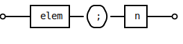

Convert-SvgbobToSvg
🔖 Synopsis
Convert fenced svgbob code blocks to svg images.
Syntax
Convert-SvgbobToSvg -InputObject <Hashtable> -SiteDirectory <String> [-Options <Object>] [<CommonParameters>]
Description
Scans the input data (lines of Markdown text) for svgbob fenced code blocks and converts them to a Markdown style image link to a svg file containing the rendered diagram.
Svgbob code blocks define human readable diagrams and are labeled as bob.
For example:
~~~ bob
+------+ .-. +---+
o----| elem |--( ; )--| n |----o
+------+ '-' +---+
~~~
The generated svg file is put right next to the HTML file currently being assembled and named after that HTML file with an unique index appended.
Parameters
-InputObject <Hashtable>
Parameter Property Value Required? true Position? 1 Default value `` Accept pipeline input? true (ByValue) Accept wildcard characters? false
-SiteDirectory <String>
Location of the static HTML site. The Svg file will be generated relative to this path.
Parameter Property Value Required? true Position? 2 Default value `` Accept pipeline input? false Accept wildcard characters? false
-Options <Object>
Svg conversion options. An object or hashtable with follwing properties or keys:
Property Description backgroundDiagram background color (default: white) fill_colorFill color for solid shapes (default: black) font_familyText font (default: monospace) font_sizeText font size (default 14) scaleDiagram scale (default: 1) stroke_widthStroke width for all lines (default: 2) When using conversion projects instantiated by
New-StaticHTMLSiteProjectthese parameters are usually configured inBuild.jsonin sectionsvgboband this parameter should be omitted for these configurations to take effect.Note: If this parameter is specified, it superseeds the configuration from
Build.json.
Parameter Property Value Required? false Position? 3 Default value `` Accept pipeline input? false Accept wildcard characters? false
Inputs
HTML fragment objects emitted by Convert-MarkdownToHTMLFragment with
the -Split switch or equivalent objects.
Outputs
Lines of Markdown text where all fenced code blocks labelled bob are
replaced by Markdown style image links to svg files.
Notes
The svg conversion is performed by the external utility
svgbob_cli.exe which is packaged with this module.
This is a Rust
crate which can be
installed from lib.rs.
Examples
EXAMPLE 1
Convert-MarkdownToHTMLFragment -InputObject $md -Split | Convert-SvgbobToSvg -SiteDirectory $site -RelativePath $relativePath
Read Markdown content from the file $md and replace all fenced code blocks
marled as bob with Markdown style image links to the svg version of the
diagram. The conversion is performed using default svg rendering options.
Where
$site- Is the absolute path to the HTML site's root directory
$relativePath- is the relative path of the HTML file currently being assembled below
$site. $md-
is a Markdown file
test.mdwhich contains a fenced svgbob diagram:Some text ... ~~~ bob +------+ .-. +---+ o----| elem |--( ; )--| n |----o +------+ '-' +---+ ~~~ Some more text ...
this fragment is converted to:
A file
test1.svgwhich is placed right next to the html filetest.htmlwhich is going to be created byPublish-StaticHtmlSitein a subsequent stage of the conversion pipeline. The numerical postfix is the index of the Svgbob diagram in the fragment. The svg image renders as:
An updated html fragment where the fenced Svgbob diagram is replaced with a reference to the svg image.
Some text ... <img src='test1.svg' alt='Diagram 1.' /> Some more text ...
Related Links
Module: MarkDownToHTML; Version: 2.8.0; (c) 2018-2022 WetHat Lab. All rights reserved.